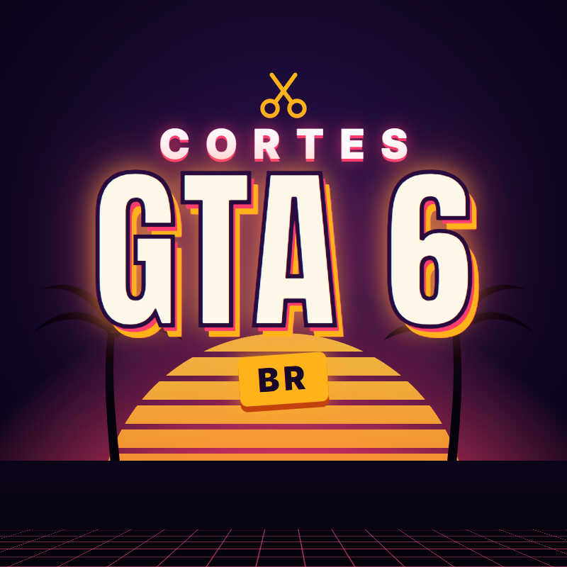

Cortes GTA 6 BR Poster
PT: Ferramenta pessoal usada pelo canal Cortes GTA 6 BR para publicar, no próprio perfil, cortes curtos de gameplay de GTA 6 editados no nosso painel local. Todo vídeo inclui crédito ao criador original da live.
EN: A personal tool used by the Cortes GTA 6 BR channel to publish, to its own profile only, short GTA 6 gameplay clips edited in our local dashboard. Every video credits the original live-stream creator.
Como funciona / How it works
- O dono do canal entra com a própria conta do TikTok (Login Kit). / The channel owner logs in with their own TikTok account (Login Kit).
- No painel, escolhe um corte pronto e clica em "Postar agora". / In the dashboard, the owner picks a finished clip and clicks "Post now".
- O vídeo é enviado para a conta do próprio dono pela Content Posting API. / The video is sent to the owner's own account through the Content Posting API.
Termos de Uso / Terms of Service · Política de Privacidade / Privacy Policy
Canal / Channel: YouTube